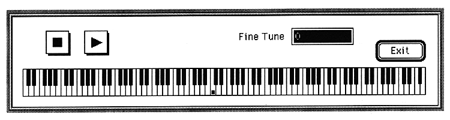

Return to previous page ｜ Return to menu ｜ Go to next page
-
SCSP menu
- This section explains each item in the SCSP menu.
-
Play Audio
If a waveform range is specified for the output destination selected in - Option, a sound is output for the specified waveform, and a sound is output for the entire waveform if it is not selected.
When this item is selected, the following window is displayed.

Return to previous page ｜ Return to menu ｜ Go to next page